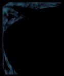
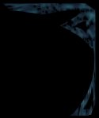
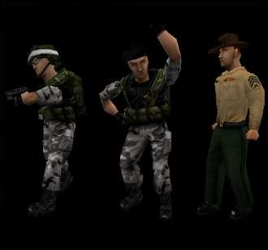

Pr�f�rez-vous half-life a opposing-force? |
| R�sultats |
|
|
|
|
| Si comme moi vous vous �tes tous | ||||
demand� comment prendre un screenshot
| d'une de vos cartes ou d'un de vos
| personnages, il existe un sharewars
| pour �a.Il est t�l�chargable sur
| l'adresse:www.hyperionics.com
|
|
| [ l'image du moment ] |

|
| Si vous voulez que je publie vos tutoriaux sur mon site, |
| envoy� les moi au format HTML sur un fond noir.Sinon, |
| si vous ne pouvez pas, �criv� les sur un bloc-note et |
| mettez quelques images au format JPG, le tout compact� |
| de pr�f�rence. |
Vous pouvez aussi voir tous mes screenshots que
|
j'ai r�aliser en cliquant ICI
|

|

|
Mettez la bani�re si-dessous pour mettre un lien entre votre site et le mien |
Accedez au forum en cliquant ici |
celui-l� car je ne cona�t ni le coding ni le modeling,enfin je pense que je vais me mettre au modeling
car primo mon ordi plante quand
je veut compil� mes carte et que secondo,j'aime bien �a.
commenc� par cr�er une salle toute simple en fait �a sera le plus simple
de tous les tuts qui seront dans le site.
Bon aller je n'est pas trop de temps a perdre je me lance sur un nouveau.
sur le site (ne mettez pas ceux de hldesign) mais faite plutot
des tuts pour ceux qui ne savent pas faire une salle avec
des textures bien appliqu�s.
envoyez les en cliquant ici.
suis tous seul.En plus je me retape toute l'interface parcequ'elle est
vraiment naz mais bon vous pouvez vous attendre a quelque chose de mieux
d'ici peu de temps.
qu'a refaire une interface correcte et rajout� encore d'autre solution.
Vous pourrez bient�t m'envoyer vos tutorials et je les publirait :-)
Je debute dans ce domaine c'est pour �a.
samedi 14 octobre 2000-J'ai un probleme d'images,elles ne s'affiche pas
Si vous savez comment r�gler ce probleme faites le moi savoir: StrifE
samedi 11 octobre 2000 -Ce site comporteras des maps, des prefabes,
des tutorials, et plein d'autres chose!
Webmaster: StrifE